INNOVATIVE LEARNING MEDIA
CodonLab
ปฏิบัติการถอดรหัสสร้างชีวิต
สื่อการเรียนรู้ที่ช่วยให้นักเรียนเข้าใจกระบวนการ DNA → RNA → Amino Acid → Protein ผ่านการลงมือปฏิบัติจริงด้วยการถอดรหัส แปลรหัส และสร้างแบบจำลองโปรตีนอย่างสนุกและมีความหมาย
ABOUT CODONLAB
CodonLab คืออะไร?
CodonLab เป็นสื่อการเรียนรู้เชิงปฏิบัติการที่ออกแบบเพื่อช่วยให้นักเรียน เข้าใจกระบวนการถอดรหัสและแปลรหัสทางพันธุกรรมอย่างเป็นรูปธรรม โดยใช้ “สี รหัส ตัวอักษร และลูกปัด” เป็นตัวแทนของสารพันธุกรรมและกรดอะมิโน ทำให้นักเรียนได้เรียนรู้ผ่านการลงมือทำจริง คิด วิเคราะห์ และเชื่อมโยงความรู้ได้ชัดเจนยิ่งขึ้น
🎯 จุดประสงค์
- อธิบายโครงสร้างและหน้าที่ของ DNA และ RNA ได้
- เข้าใจกระบวนการ Transcription และ Translation
- แปลความหมายจาก Codon เป็น Amino Acid ได้
- สร้างแบบจำลองสาย Polypeptide ได้อย่างถูกต้อง
✨ จุดเด่นของสื่อ
- แปลงเนื้อหายากให้มองเห็นและจับต้องได้
- เน้น Active Learning และการร่วมมือกันทำงาน
- กระตุ้นการคิดวิเคราะห์และการแก้ปัญหา
- เชื่อมโยงความรู้ทางชีววิทยากับการสร้างชิ้นงานจริง
🧠 เหมาะกับใคร
- นักเรียนระดับชั้นมัธยมศึกษาตอนปลาย
- ครูชีววิทยาที่ต้องการสื่อแบบลงมือปฏิบัติ
- กิจกรรมห้องเรียนและนิทรรศการวิทยาศาสตร์
LEARNING KIT
อุปกรณ์ในชุดสื่อ CodonLab
อุปกรณ์ทุกชิ้นถูกออกแบบมาเพื่อเชื่อมโยงแนวคิดทางชีววิทยาให้เป็นประสบการณ์การเรียนรู้ที่เข้าใจง่าย สนุก และน่าจดจำ

ชุดรหัสพันธุกรรม
คือ ชุดรหัสพันธุกรรมที่กำหนดให้ สำหรับใช้ในการถอดรหัส

ตารางแปลรหัส
ใช้สำหรับแปลรหัส mRNA จาก Codon ไปเป็นกรดอะมิโนแต่ละชนิด
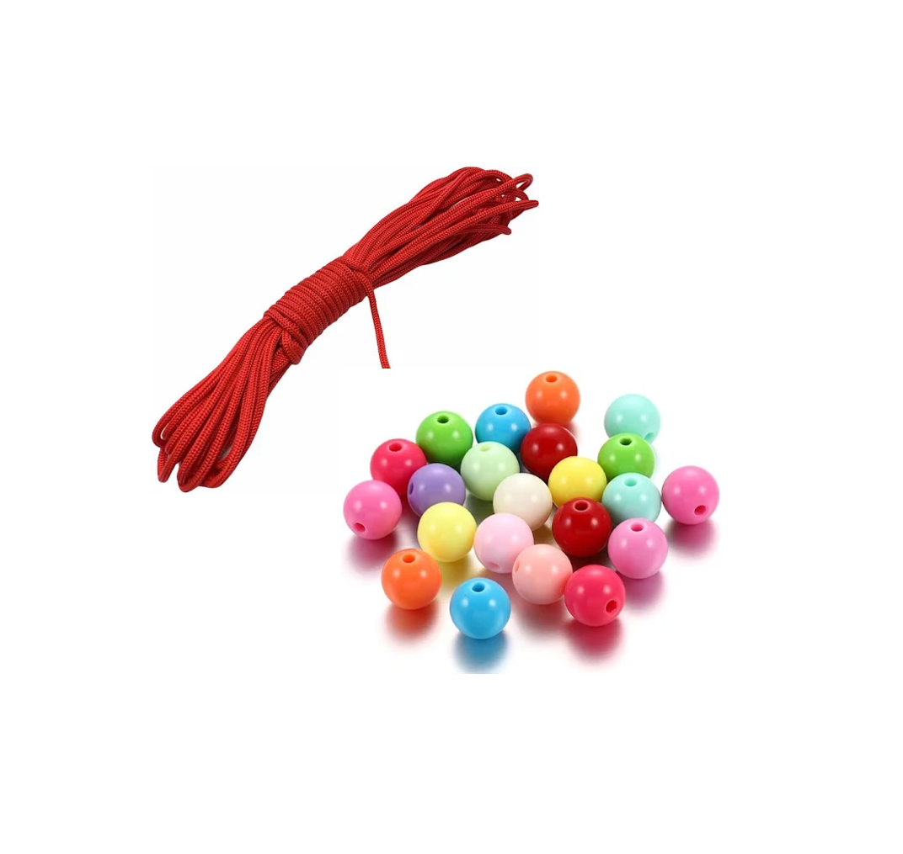
ลูกปัดและเชือก
ลูกปัดสีใช้แทนกรดอะมิโนแต่ละชนิด และใช้เชือกร้อยเพื่อสร้างสาย Polypeptide

ถาดวางลูกปัด
ใช้จัดวางและเรียงลูกปัดตามตำแหน่ง ของยีนเพื่อดูผลการแสดงลักษณะ
HOW TO USE
วิธีการใช้งาน CodonLab
ขั้นตอนการเรียนรู้ถูกออกแบบให้เรียงลำดับจากง่ายไปยาก เพื่อให้นักเรียนเข้าใจภาพรวมของการสังเคราะห์โปรตีนอย่างเป็นระบบ
เตรียมรหัส DNA
ครูเตรียมรหัส DNA โดยใช้โปรแกรม CodonLab DNA Generator
🧬 เปิดโปรแกรม CodonLab DNA Generator ↗เปลี่ยน DNA เป็น mRNA
นักเรียนฝึกกระบวนการ Transcription โดยถอดรหัส DNA ไปเป็น mRNA

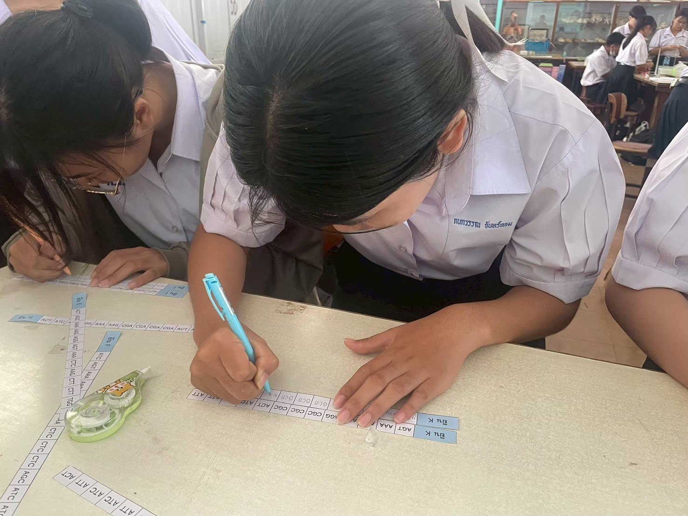

แปลรหัสเป็นกรดอะมิโน
ใช้ตาราง Codon แปลรหัสจาก mRNA ไปเป็นลำดับกรดอะมิโน

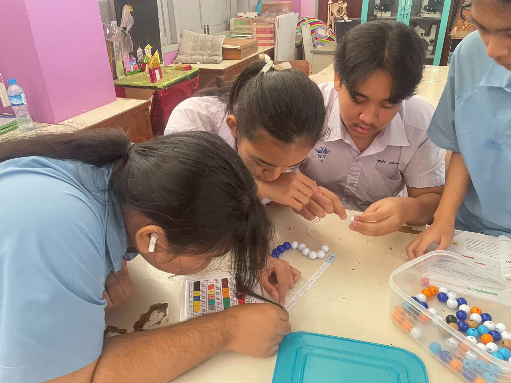

ร้อยลูกปัดสร้าง Polypeptide
นำลำดับกรดอะมิโนที่ได้ มาร้อยลูกปัดตามสีที่กำหนด เพื่อสร้างแบบจำลองสาย Polypeptide
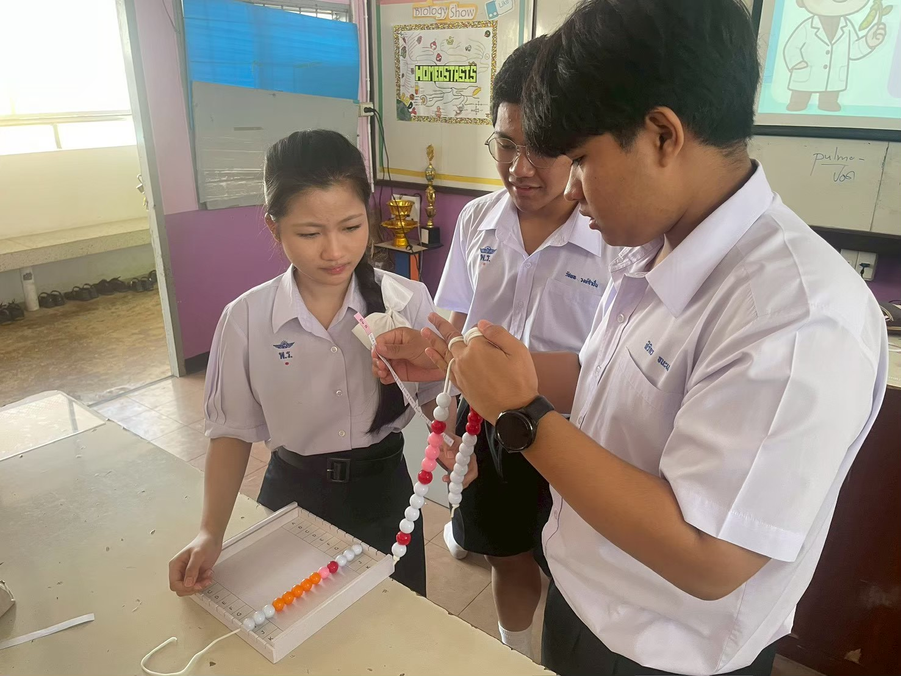

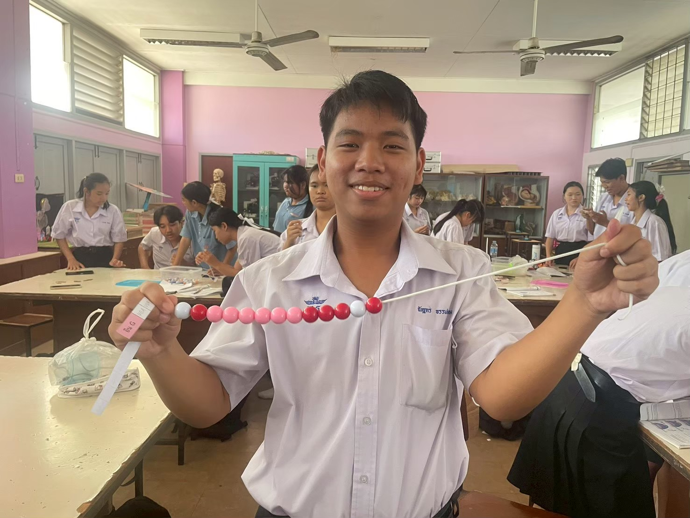
สังเกตลักษณะทางพันธุกรรม
นำสายลูกปัด Polypeptide ไปจัดเรียงลงในถาดตามตำแหน่งของยีน แล้วสังเกตภาพหรือลักษณะที่เกิดขึ้น


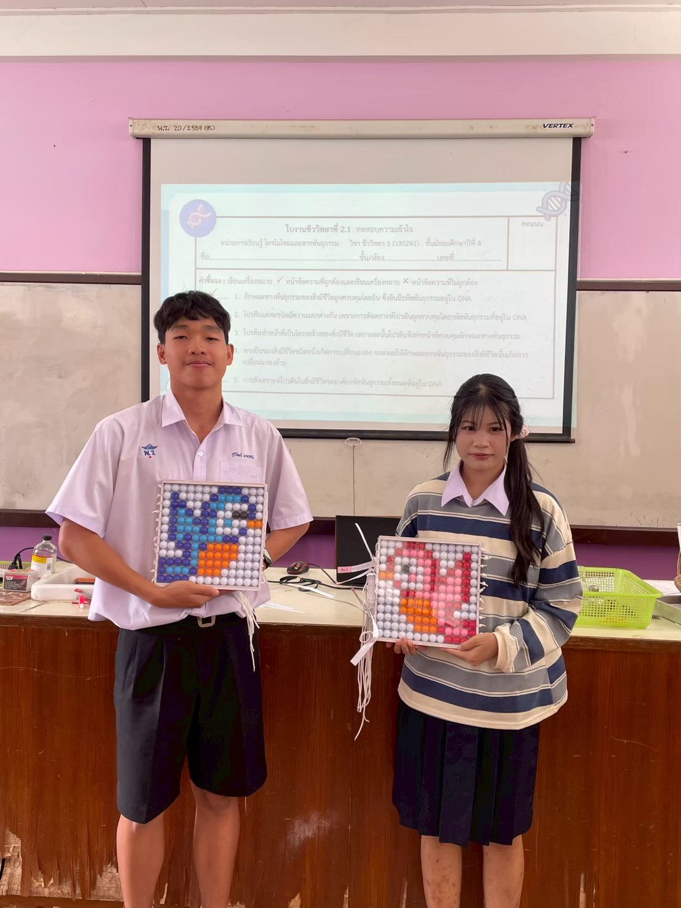
อภิปรายและสรุปผล
นักเรียนร่วมกันวิเคราะห์และเปรียบเทียบ DNA, mRNA, ลำดับกรดอะมิโน และลักษณะทางพันธุกรรมที่เกิดขึ้น เพื่อสรุปความสัมพันธ์จากยีนสู่ลักษณะของสิ่งมีชีวิต
BIOLOGY CONCEPT
กระบวนการสังเคราะห์โปรตีน
CodonLab เชื่อมโยงแนวคิดสำคัญของชีววิทยาให้เห็นเป็นภาพและปฏิบัติได้จริง
ACTIVITY GALLERY
ภาพกิจกรรมการใช้สื่อ
ภาพการจัดกิจกรรมจริงในชั้นเรียน
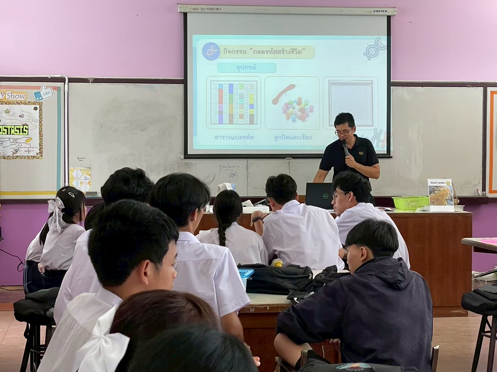
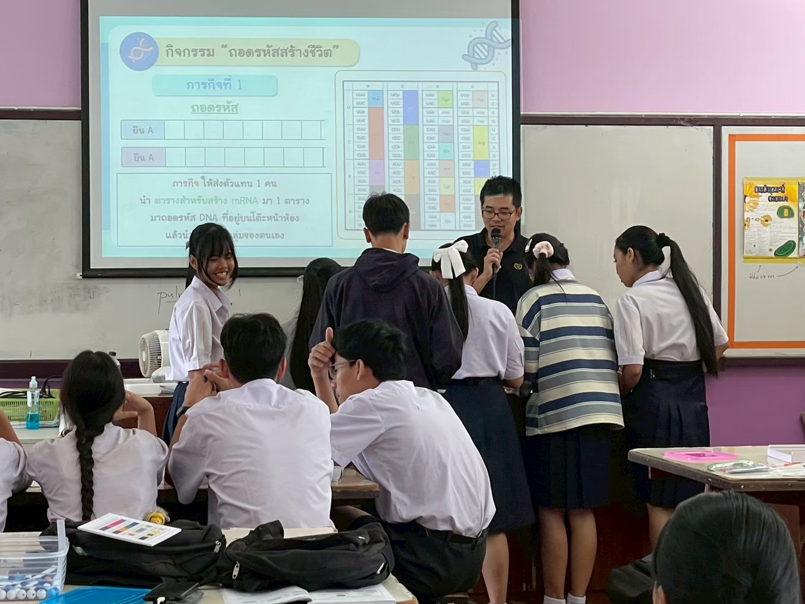


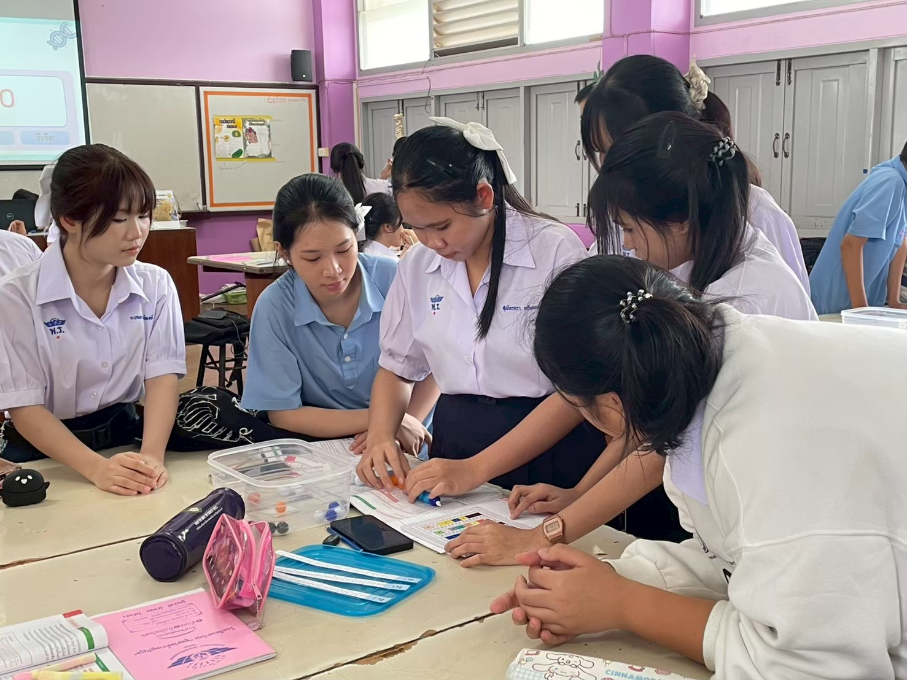


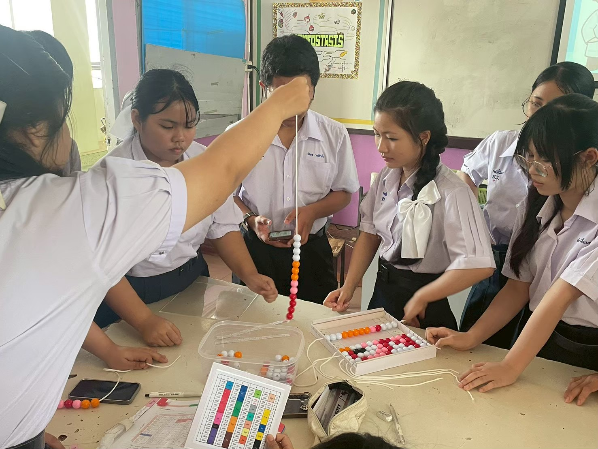
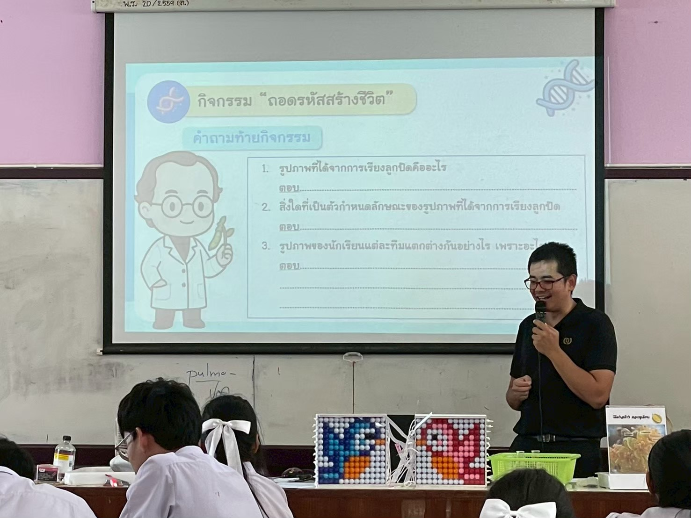
LEARNING OUTCOMES
ผลที่เกิดจากการใช้สื่อ
CodonLab ไม่ได้เป็นเพียงสื่อที่สวยงาม แต่เป็นเครื่องมือที่ช่วยให้ผู้เรียนเข้าใจเนื้อหายากได้อย่างมีประสิทธิภาพ
เพิ่มความเข้าใจเชิงลึก
ผู้เรียนสามารถเชื่อมโยงความสัมพันธ์ของ DNA, RNA, Codon และโปรตีนได้ชัดเจนขึ้น
เกิดการเรียนรู้ผ่านการลงมือทำ
ผู้เรียนมีส่วนร่วมในการคิด วิเคราะห์ ถอดรหัส และสร้างแบบจำลองด้วยตนเอง
พัฒนาทักษะกระบวนการทางวิทยาศาสตร์
ช่วยฝึกการสังเกต การตีความข้อมูล การแก้ปัญหา และการอภิปรายร่วมกัน
“CodonLab ทำให้เรื่องการสังเคราะห์โปรตีนที่เคยมองว่ายาก กลายเป็นกิจกรรมที่นักเรียนเข้าใจได้ สนุก และอยากเรียนรู้ต่อ”